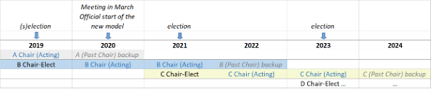

OSG Consortium Bylaws
Purpose of the OSG Consortium
The OSG Consortium is a consortium of scientific collaborations, scientific computing centers, and existing and new grid research and deployment projects, involving both computational and application scientists, working together to provide and support the set of facilities, services, and infrastructure needed to provide a persistent national grid infrastructure for large-scale US science.
Organizational Structure
The governing bodies of the OSG Consortium are the OSG Council and the OSG Executive Team (the organizational structure is detailed in the OSG management plan).
-
The OSG Council provides the scientific coordination and oversight of OSG activities.
-
The Council Chairpersons are self-elected by the Council to lead the Council.
-
The Executive Director is elected by the Council to manage programmatic activities with the help of an Executive Team.
-
The Executive Team is appointed by the Executive Director to direct the OSG program of work (details of the program of work may be found in the OSG Management Plan), draw up policies and represent the OSG Consortium in dealing with other organizations and committees. All appointments to the Executive Team are subject to Council approval.
Note: Users of OSG services and providers of capacity to the Open Science Compute and Data Federations do not need to be affiliated with OSG member organizations.
Membership of the OSG Consortium
Consortium membership occurs through completed registration of a resource, VO, or other organization with the Consortium through an operations registration process. Consortium members contribute to and/or benefit directly from the resources, use, operations, and/or other activities. Consortium members recognize that the OSG fabric of services is a sharing ecosystem and strive to maximize the sharing of computing resources, software, and other assets to enable science.
Consortium partners collaborate with the Consortium as peer organizations. Their representatives have ex-officio status on any of the management boards in which they participate. The Executive Team develops agreements with the management of the partner organizations to define the expectations and activities of the collaboration.
Membership of the Council
Membership in the OSG Consortium does not imply membership on the OSG Council. The Council represents the organizations that comprise the Consortium. The Council membership shall not exceed 30 voting members. At least two voting slots will be held for Council members-at-large to represent Consortium members who do not have direct representation on the Council. At-large representatives will have a term of 2 years.
The Council has the ability to appoint non-voting liaisons and partnership representatives to participate in the Council.
New organizations may apply for membership in the Council if supported by at least one existing member. The proposal for participation is submitted to the Council Chair. The Chair will consult with the Executive Team who will make a recommendation to the Council concerning the application. The Council formally votes on the acceptance of new members in a timely and appropriate manner.
Council Chairpersons
At any given time, there shall be two Council Chairpersons, either a Chair (Acting) and a Chair-Elect, or a Chair (Acting) and a Past Chair. Every 2 years, the Council shall self-elect a Chair-Elect, who will serve 1 year in that role before becoming Chair for the following 2 years. Upon the ascension of the Chair-Elect to Chair, the preceding Chair serves as Past Chair for 1 year, ending when the subsequent Chair-Elect is elected. The accompanying diagram illustrates the scheme.

Provisions for a sustainable and resilient model are as follows:
-
Should the Chair be unable to complete the 2-year term, the Chair-Elect will immediately become Chair and the Council will select a new Chair-Elect. The Council will adjust the election cycle so that the new Chair serves a 2-year effective term (“acting” role).
-
Should the Chair-Elect be unable to complete the 1-year term, the Council will select a new Chair-Elect. This could happen during either (a) the overlap with an outgoing Chairperson serving as backup - in this case, an elect is found and immediately serves as acting Chair under the guidance of the outgoing Chairperson, or (b) immediately after the election of a Chair-elect has occurred – in this case, a new Chair-elect is elected. In this later case, the Council Chairperson may also call the Council to endorse the second-best alternate candidate of the recent election.
-
Should neither the Chair nor the Chair-Elect be able to complete their terms, the OSG Executive Director will temporarily serve as Council Chair for the purpose of organizing the selection of a new Chair and Chair-Elect.
Council member responsibilities
It is the intention that OSG Council members actively participate in Council and Consortium activities on a regular basis. Activities include teleconference, video-conferences, face-to-face meetings, email voting, contributing to the work of the Council, etc. A regular basis is defined as participation in at least half of the Council events during a 6-month period.
Alternates
Council members can send alternates to meetings and activities occasionally, but this is not considered actively participating. Alternates are allowed to represent their respective organizations and, if empowered, vote via proxy.
Quorum
For the sake of votes, 1/5 of the membership is considered a quorum as long as the vote is announced in advance.
A Council member can provide a voting proxy to another Council member or an alternate by contacting the Council Chair and informing the Chair who has the member’s proxy. Proxies are temporary and last for the length of a single activity (meeting, electronic vote, etc.).
Establishment of Bylaws
The bylaws and charter are accepted by majority vote according to the OSG Voting Procedures as approved at the time of the vote. The initial bylaws and charter were accepted by consensus.
Amendment of Bylaws or Charter
-
An amendment to the bylaws or charter can be proposed by any member of the Executive Team or Council.
-
A proposed amendment is then accepted according the OSG Voting Rules as approved at the time of the vote.
Change History
| Vers | Date | Authors | Purpose |
|---|---|---|---|
| &emdash; | 2022/11 | TAC | Minor editorial updates |
| V.2.2 | 2020/03 | JL/KB | Reshaped bylaws to reflect new structure, Council Chairpersons (Chair and Chair-elect) |
| V2.1 | 2015/01 | FKW, CSS, RP, BJ | Added the concept of sharing eco-system and Consortium member’s role in maximizing sharing. |
| V2.0 | 2013/03 | AB, VW, KM, RP | Combined bylaws and voting, cleared up text for inconsistencies. Made role of ET clear. Remove Scientific Advisory Group Added Purpose; Define the Executive Team; Define Council membership; Define participation expectations, alternates, proxies*; Define high level responsibilities; Deleted member lists – will be post on the web |
| V1.0.3 | 8/24/05 | wtck | Updates based on funding agreements and other originating documents. |
| v.1.0.1 | 3/10/05 | fkw | Added D.Olson to exec. Board as of Feb.9 2005 |
| V1.0 | 2/18/05 | fkw | TG-Governance ratified text |